11. The Search for Extraterrestrial Intelligence#
Jun 06, 2026 | 13415 words | 67 min read
How to use this chapter
This chapter asks a narrower question than most of the course: not merely whether life exists beyond Earth, but whether any life has produced technology that we could notice from far away. Focus on four threads as you read: how the Drake equation organizes uncertainty, why intelligence is not the same thing as technology, how SETI searches for technosignatures, and why UFO/UAP claims require careful evidence rather than either automatic belief or automatic dismissal.
Most of this course has focused on environments where life could exist. We have asked whether Mars was ever wet enough, whether Europa or Enceladus could hide an ocean, whether Titan could support chemistry unlike ours, and whether exoplanets might have atmospheres that point toward biological activity. Those questions matter even if life never becomes complex. Microbes would still be extraterrestrial life.
SETI asks a different question. SETI stands for the Search for Extraterrestrial Intelligence, but in practice it is a search for remotely detectable technology. A civilization might send a radio beacon, leak radar signals, fire laser pulses, alter a planet’s atmosphere, or build large structures that change how starlight is absorbed and reradiated. These are not biosignatures. They are technosignatures: signs that technology is affecting the environment in a way we can observe.
That shift matters. A planet can be habitable without being inhabited, inhabited without being intelligent, intelligent without building radios, and radio-capable without transmitting while we are listening. SETI is exciting because a confirmed signal would be one of the most important discoveries in human history. It is also difficult because every step in that chain adds uncertainty.
A final theme runs through the whole chapter: SETI is a search for evidence, not a referendum on whether you personally “believe in aliens.” Belief is too broad a word for this topic. A scientist can think extraterrestrial intelligence is plausible, support SETI, and still reject a specific UFO claim. A scientist can be skeptical of alien visitation and still think radio or optical SETI is worth doing. Those positions are not contradictory because they refer to different kinds of evidence.
The public conversation often collapses SETI, exoplanets, biosignatures, UFOs, and science fiction into one giant “aliens” category. This chapter separates them. Exoplanet discoveries show that planets are common. Habitability studies ask which of those planets could support life. Biosignature studies ask whether life has changed a planet in detectable ways. SETI asks whether technology has produced a detectable signal or artifact. UFO/UAP investigations ask whether particular reports have enough data to identify their cause. Confusing those categories makes the evidence seem stronger or weaker than it really is.
That separation should make the subject more interesting, not less. The universe can be full of possibilities without every claim being equally good. The scientific search is powerful because it gives us a way to stay curious for decades without fooling ourselves every time something looks strange.
11.1. The Drake Equation#
11.1.1. What the equation is actually for#
Scientists often estimate the chances of finding something before they know whether the thing exists. This is not cheating. It is how researchers decide what observations are worth making, what instruments need to be built, and what assumptions matter most. In 1961, Frank Drake organized the first scientific conference on SETI at Green Bank, West Virginia. The meeting was small, with only about a dozen people, but the participants brought together astronomy, biology, and engineering. Drake needed a way to structure the agenda, so he wrote down the factors that would determine how many civilizations in the Milky Way might be able to communicate with us.
That structure became the Drake equation. It is sometimes presented as if it were a calculator for aliens. That is the wrong way to read it. The equation does not produce a reliable number unless the inputs are reliable, and several of the inputs are not reliable yet. Its real value is that it forces us to say which uncertainties belong to astronomy, which belong to biology, which belong to evolution, and which belong to the long-term behavior of technological societies.
The condensed version we will use in this chapter is
Here, \(N_{\star}\) is the number of stars in the Galaxy, \(f_{\rm hab}\) is the fraction of star systems with at least one habitable planet, \(f_{\rm life}\) is the fraction of habitable planets where life actually arises, \(f_{\rm civ}\) is the fraction of life-bearing planets that produce a radio-capable civilization, and \(f_{\rm now}\) is the fraction of those civilizations that are active right now. The last term is easy to underestimate. SETI cannot detect a civilization that existed a billion years ago and is gone, unless it left behind a still-visible technosignature.
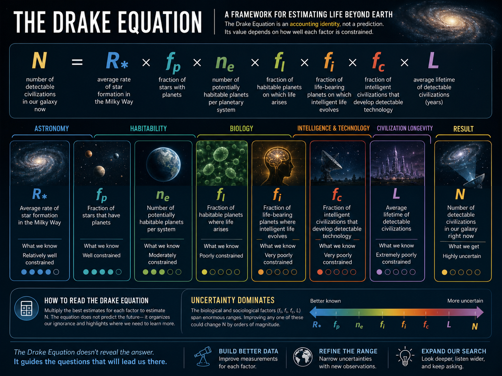
Fig. 11.1 The Drake equation is an accounting framework. It separates the SETI problem into pieces: astronomy determines how many potentially habitable worlds exist, biology determines how often life starts, evolution determines how often intelligence and technology appear, and history determines whether civilizations last long enough to overlap with us. Image credit: Instructor-created course media.#
This video treats the Drake equation as a way to organize uncertainty rather than as a claim that aliens must exist. Focus on which terms are constrained by astronomy and which terms remain speculative.
The equation also clarifies why SETI is connected to the rest of astrobiology. The term \(f_{\rm hab}\) depends on the exoplanet statistics from Chapter 11 and the habitable-zone caveats from Chapter 10. The term \(f_{\rm life}\) depends on the origin-of-life questions from Chapter 6. The term \(f_{\rm civ}\) depends on how evolution works on a life-bearing planet, which connects back to Chapter 5. The equation looks like SETI, but most of its pieces belong to the whole course.
Interactive: Try the Drake Equation
Use this interactive calculator to test how sensitive the Drake equation is to its least certain terms. Try changing only one term at a time. Which matters more for the final answer: the fraction of planets that develop life, the fraction that develop detectable technology, or the lifetime of a detectable civilization?
A useful way to read the equation is as a chain of filters. Start with the entire Milky Way. Then ask which systems contain planets. Then ask which planets have long-term environments where liquid water, energy, and useful chemistry can persist. Then ask which of those worlds actually develop life. Then ask whether that life ever becomes complex enough to build technology. Finally, ask whether that technology is operating at the same cosmic moment we are listening. Each filter can remove many possibilities.
The equation also shows why arguments about aliens often talk past each other. One person may be optimistic about planet abundance, while another is pessimistic about civilization lifetime. Both can sound like they are arguing about “whether aliens exist,” but they are really arguing about different terms. Drake’s contribution was to separate those arguments so they could be discussed, measured, and challenged one at a time.
The variables also remind us that the question depends on the kind of life we are searching for. If the question is “Are there microbes in the Galaxy?” then the technology terms are irrelevant. If the question is “Can we detect a radio beacon?” then microbial life does not help unless evolution and culture produce transmitters. SETI is therefore the narrowest and most demanding version of the astrobiology problem.
Historically, this mattered because SETI began before exoplanets were confirmed around Sun-like stars. Drake and his colleagues did not know whether planets were common. They had to make educated guesses. Today, we can replace some guesses with measurements. That is progress, but it has not solved the equation. Astronomy has improved the left side of the problem faster than biology and sociology have improved the right side.
# Simple Drake-equation example
N_stars = 100_000_000_000 # approximate number of stars in the Milky Way
f_hab = 0.01 # fraction of systems with a habitable planet
f_life = 1/4 # fraction of habitable planets where life arises
f_civ = 1/8 # fraction of life-bearing planets with radio-capable civilization
f_now = 1/10 # fraction of those civilizations active now
N_civilizations = N_stars * f_hab * f_life * f_civ * f_now
print(f"Estimated active radio-capable civilizations: {N_civilizations:,.0f}")
Estimated active radio-capable civilizations: 3,125,000
Checkpoint
The Drake equation can give a large number even when several fractions are small. Which part of the equation would you most want to measure better before trusting the result, and why?
The important lesson is not the exact number. The important lesson is that SETI can be optimistic and scientifically disciplined at the same time. It is reasonable to search because the Galaxy is huge and old. It is also reasonable to be cautious because one unknown fraction can change the answer by many orders of magnitude.
11.1.2. What we know and what we do not#
The best-constrained part of the Drake equation is the astronomical beginning. We know stars are common. We know planets are common. The NASA Exoplanet Archive listed more than 6,000 confirmed exoplanets by 2026, and the count keeps growing as new surveys and follow-up observations are added. The lesson from exoplanet astronomy is no longer “planets might exist.” The lesson is that planets are a normal outcome of star formation.
The harder question is not whether planets exist, but how many are genuinely habitable. A planet might orbit in the habitable zone but lack an atmosphere. It might have an atmosphere but no long-term climate regulation. It might have water but only deep underground. It might be habitable for microbes but not for complex organisms. The course slide estimate that about 20% of star systems may have at least one potentially habitable planet is useful for scale, but it should not be treated as a final number. It is a bridge between confirmed exoplanet statistics and the more complicated habitability analysis from earlier chapters.
The biological terms are much less secure. We have exactly one confirmed example of life: Earth. If life arose quickly once Earth became habitable, that gives some reason for optimism, but it does not prove that life is easy. A rare event can happen early on one planet simply because we could only ask the question on a planet where it happened. This is called an observational selection effect. We should not ignore Earth’s history, but we should not overinterpret it either.
The astronomy term is improving because exoplanet surveys are statistical. Kepler stared at one patch of sky and counted transits. TESS surveys much of the sky and finds planets around brighter nearby stars. Radial-velocity surveys measure stellar wobbles. Direct-imaging surveys search for young giant planets far from their stars. Each method has biases, but the biases can be modeled. That is why planet occurrence rates can be estimated even when most individual planets remain unseen.
Habitability is harder to turn into one fraction. In Chapter 9, the habitable zone was useful because it gave a physically motivated starting point: where could surface liquid water exist on an Earthlike planet? But the SETI version of habitability may need more. A civilization capable of astronomy might require stable continents, access to metals, long-lived climate regulation, moderate impact rates, and enough environmental challenge to drive innovation without repeatedly resetting complex life. Those requirements are plausible but not well measured.
This does not mean the Drake equation should be abandoned. It means the equation is a scaffold. As science improves, each term can be refined or split into subterms. For example, \(f_{\rm hab}\) might become a product of planet occurrence, rocky composition, volatile delivery, atmospheric retention, and climate stability. \(f_{\rm civ}\) might become a product of complex life, intelligence, tool use, cumulative culture, and high-energy technology. The equation grows as our questions become more precise.
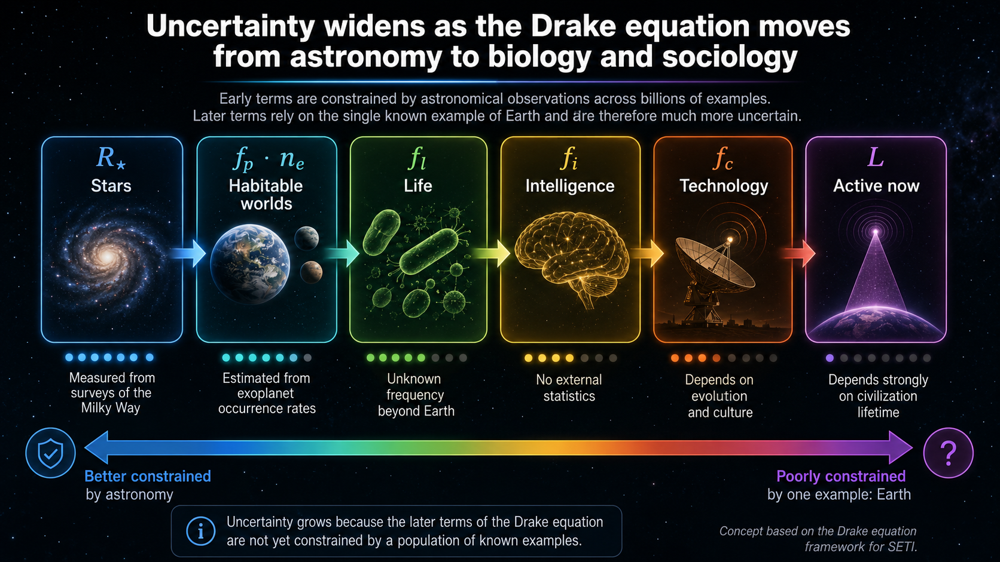
Fig. 11.2 The Drake equation begins with astronomy, where we have large surveys, and ends with biology, evolution, and sociology, where we have only one inhabited planet to study. The uncertainty grows as we move from stars to active civilizations. Image credit: Instructor-created course media.#
The last factor, \(f_{\rm now}\), is often the most sobering. The Milky Way is roughly 13 billion years old. Sun-like stars have existed for most of that time. Earth has been habitable for billions of years, life has existed for most of Earth’s history, and yet humans have been radio-capable for only about a century. Compared with a rough 10-billion-year window in which civilizations around Sun-like stars could exist, that is only about 1 in 100 million of the available time. Even if many civilizations appear, SETI succeeds only if some of them last long enough, transmit strongly enough, and overlap with the short window in which we are listening.
This makes civilization lifetime central. A Galaxy with many short-lived technological societies could be quiet most of the time. A Galaxy with fewer but long-lived societies could be easier to detect. SETI therefore depends partly on astronomy and partly on a question we cannot answer from astronomy alone: do technological civilizations usually survive their own dangerous phases?
A subtle issue is that the Drake equation does not know whether its terms are independent. A planet’s habitability might affect the probability that life arises, but it could also affect whether complex life survives long enough to develop intelligence. Stellar type might affect atmospheric retention, ultraviolet radiation, tidal locking, flare exposure, and the visibility of technosignatures. A civilization around a quiet K star may have a different history than one around an active M dwarf. Multiplying simple fractions is useful for classroom reasoning, but real worlds are connected systems.
Selection effects also matter. We know Earth produced life, intelligence, and technology because we are here asking the question. That fact does not let us fairly sample the distribution of all habitable planets. For example, if intelligent observers usually appear only on planets where life started early, then every observer will look back and see life starting early on their own world. That makes early life on Earth encouraging, but not decisive.
The same caution applies to civilization lifetime. We do not know whether technological societies tend to self-destruct, stabilize, become quieter, or move into forms of technology that we would not recognize. Human radio leakage has changed over time. Powerful analog television broadcasts are not the future of communication. Fiber optics, tight beams, spread-spectrum signals, and satellite networks may all change how visible a civilization is. A society can become more technologically advanced while becoming less obvious to a distant radio telescope.
This is why modern SETI often talks about “search space.” A search covers only some targets, frequencies, times, signal strengths, and signal types. A null result can be important, but only if we say exactly what was ruled out. “We did not detect narrowband radio beacons from these targets over this frequency range during these observations” is a scientific result. “There are no aliens” is not.
# Fraction of a 10-billion-year window during which Earth has been radio-capable.
radio_years = 100 # approximate duration of human radio capability
civilization_window = 10_000_000_000 # rough time window for civilizations around Sun-like stars
fraction_radio_capable = radio_years / civilization_window
print(f"Radio-capable fraction of a 10-billion-year window: {fraction_radio_capable:.1e}")
print("That is about 1 part in 100 million.")
Radio-capable fraction of a 10-billion-year window: 1.0e-08
That is about 1 part in 100 million.
Checkpoint
Suppose life is common but technological civilizations usually transmit for only 100 years. How would that change the SETI problem compared with a Galaxy where civilizations transmit for a million years?
The strength of the Drake equation is also its weakness: it makes our ignorance visible. That visibility is useful. Kepler and later exoplanet surveys helped constrain the planet terms. Future biosignature studies could constrain how often life modifies planetary atmospheres. SETI itself constrains the technology terms by searching and finding either signals or meaningful upper limits.
11.2. The Question of Intelligence#
11.2.1. Life is not automatically a radio civilization#
A major trap in thinking about SETI is to slide from “life” to “intelligence” to “radio technology” as if those were automatic steps. Earth should make us more careful. For most of Earth’s history, life was microbial. Complex animals arrived late. Technological humans arrived extremely late. Radio arrived essentially yesterday on geological timescales.
Fig. 11.3 This tree helps separate “life” from “technological life.” Most of Earth’s biological diversity is microbial, while animals occupy only one small part of Eukarya. The star marking “you are here” is useful for SETI because it reminds us that radio-building organisms are not representative of life as a whole. Source: OpenStax Concepts of Biology, Figure 12.2, modification of work by Eric Gaba. Image credit: OpenStax / Eric Gaba.#
There are two reasonable positions. One says that intelligence may be rare. Life could be common, but technological intelligence may require a long chain of lucky events: stable climate, oxygen buildup, the rise of eukaryotic cells, multicellularity, the Cambrian diversification, survival through mass extinctions, and the particular evolutionary path that produced humans. On this view, SETI could fail even if the Galaxy is full of microbes.
The other position says that intelligence may be a common evolutionary outcome. Natural selection repeatedly favors organisms that process information well. Animals that remember locations, recognize individuals, coordinate with group members, solve problems, and predict the behavior of prey or predators can gain survival advantages. If similar ecological pressures occur on many life-bearing worlds, then some version of high intelligence might evolve repeatedly.
Life can remain microbial for billions of years. Complex technology may require many historical contingencies: oxygen-rich environments, large mobile animals, hands or equivalent manipulators, social learning, and long cultural accumulation. In this view, Earth may not be typical because technological intelligence depended on many events lining up in the right order.
Natural selection repeatedly rewards better information processing. If many planets produce animals with complex ecological and social lives, intelligence could emerge more than once, much as eyes, wings, and streamlined bodies evolved multiple times on Earth. In this view, intelligence is not guaranteed, but it may be a recurring evolutionary solution.
Checkpoint
Why is “life exists” not enough to make SETI likely to succeed? Name two additional steps that must happen before a civilization becomes detectable to us.
Both positions are scientifically useful because they make different expectations. If intelligence is rare, SETI should focus on very large surveys and long timescales. If intelligence is common, then even modest searches may eventually succeed. The only honest answer at present is that we do not know which view is closer to reality.
Earth’s own timeline is the best warning against assuming too much. For roughly the first half of life’s history, the planet was dominated by microbes. Oxygenic photosynthesis eventually changed the atmosphere, but oxygen was not simply a gift to life. It was toxic to many anaerobic organisms and triggered major environmental change. Large animals required enough oxygen to support energy-demanding bodies, but oxygen alone did not guarantee intelligence. It only made certain biological options more available.
Mass extinctions also complicate the story. The K-Pg impact removed non-avian dinosaurs and opened ecological space for mammals, including the primate line that eventually produced humans. If that impact had not happened, Earth might still have intelligent life eventually, but we cannot assume it would look like us or build technology on the same schedule. SETI has to live with that uncertainty. It is possible that technological intelligence is a common endpoint. It is also possible that our path required a long sequence of historical accidents.
The strongest scientific posture is to avoid both extremes. It is not justified to say that humans were inevitable. It is also not justified to say that intelligence must be unique. The evidence from Earth shows that life can evolve complexity, communication, social behavior, tool use, and problem-solving. The evidence does not yet tell us how often those traits combine into a radio-capable civilization.
11.2.2. Convergent evolution and intelligence#
Convergent evolution is one of the strongest arguments for optimism about intelligence. It occurs when organisms with different evolutionary histories develop similar adaptations because they face similar problems. Dolphins are mammals and sharks are fish, but both have streamlined bodies because fast swimming has clear survival value underwater. Wings evolved in insects, birds, bats, and extinct pterosaurs. Eyes evolved independently many times because vision is useful in many environments.
This does not mean evolution has a goal. Natural selection does not aim at humans. It sorts variation in specific environments. Still, if certain problems appear again and again, similar solutions can appear again and again. The SETI-relevant question is whether large brains and flexible behavior are one of those repeatable solutions.
Brain mass is an imperfect measure of intelligence, but it gives a starting point. Larger animals tend to have larger brains simply because they have larger bodies to operate. A whale brain is larger than a human brain, but a whale is also much larger than a human. The encephalization quotient, or EQ, tries to compare brain size relative to body size. Humans have an unusually high EQ. Dolphins also have high EQ values, and they are not close relatives of humans. That is why cetaceans are often used as evidence that complex intelligence can evolve along more than one branch of the tree of life. EQ can even be estimated for extinct animals by using fossil skulls to estimate brain volume and other bones to estimate body mass. It is still a rough measure, but it lets scientists ask whether predators, social animals, or species with long parental care tend to require more flexible behavior than animals with simpler ecological demands.
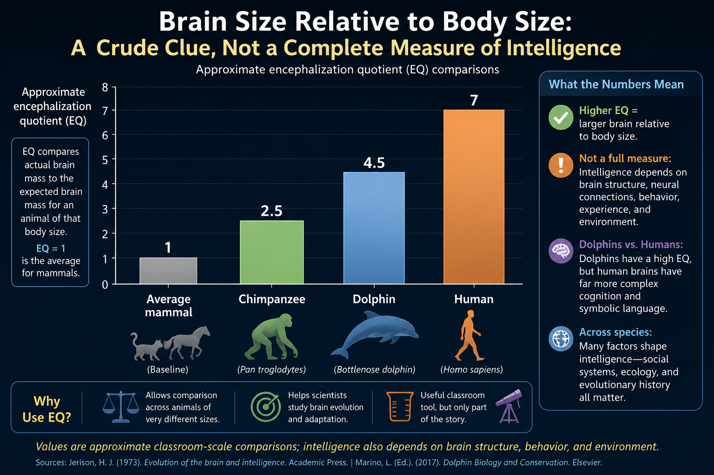
Fig. 11.4 EQ is a rough way to compare brain size relative to body size. It is not a complete intelligence meter, but it helps us see why dolphins and primates are often discussed in arguments about convergent evolution toward clever behavior. Image credit: Instructor-created course media.#
Focus on why similar ecological problems can produce similar adaptations in unrelated organisms.
The cetacean example is especially interesting because toothed whales and dolphins appear to have had major increases in relative brain size tens of millions of years ago. Studies that estimate brain volume from fossil skulls and body mass from skeletal measurements have compared hundreds of specimens across dozens of cetacean species; the slide-deck summary highlights major EQ shifts near about 35 million years ago and again near about 15 million years ago. Echolocation, social life, cooperative hunting, and parental care may all have contributed. None of these developments were directed toward radio astronomy. They were local adaptations. But local adaptations can build the capacities that later make technology possible.
Checkpoint
Convergent evolution is sometimes used to argue that intelligence may be common. What is one strength of that argument, and what is one limitation?
The key point is that intelligence is not magic. It is an evolved biological trait with costs and benefits. Big brains consume energy. In humans, the brain is only about 2% of body mass but uses roughly a quarter of the body’s metabolism. A large brain must therefore pay its way. It can be favored when flexible behavior improves survival, communication, tool use, social competition, hunting, or parenting. Predator-prey interactions can also ratchet up intelligence: better prey avoid predators more successfully, while better predators track and anticipate prey more successfully.
Cephalopods add another useful example. Octopuses are not mammals, and their nervous systems are organized very differently from ours, yet they can solve problems, manipulate objects, learn from experience, and display flexible behavior. They also show why intelligence may hit a technological wall. An octopus has excellent manipulators, but it is mostly solitary, short-lived, and aquatic. Those traits make cumulative technological culture difficult. Intelligence can evolve in surprising places without becoming astronomy.
Birds provide another complication. Crows, ravens, and parrots have small brains by mammal standards but impressive problem-solving ability. Their neurons are packed differently, so brain mass alone can mislead. This is why EQ should be treated as a classroom tool rather than a full theory of intelligence. It gives us a way to start thinking quantitatively, but the real question is behavioral flexibility in an ecological setting.
Social learning may be one of the most important bridges between intelligence and technology. A single clever animal can solve a problem, but a technological civilization needs knowledge to accumulate across generations. Tool traditions, teaching, language, memory, and institutions allow discoveries to survive the death of individuals. SETI is therefore not only asking whether brains evolve. It is asking whether information can accumulate into a technological culture.
11.2.3. Why intelligence may not become technology#
Even if intelligence evolves, technology is not guaranteed. Dolphins are intelligent, social, and capable of complex behavior, but they live in water and lack hands. That matters. A species that cannot easily manipulate fire, build rigid structures, or develop dry electronics may have limited paths toward telescopes and radio transmitters. Intelligence can be real without becoming technological.
Body design is only part of the problem. Cultural history matters too. Homo sapiens emerged roughly 300,000 years ago, but radio communication is less than about a century old. Even if recognizably modern human behavior was present tens of thousands of years ago, the path to modern science required agriculture, cities, writing, mathematics, instruments, printing, institutions, and the cumulative habit of testing ideas against evidence. The slide deck points out that one historical line running through Greek natural philosophy eventually contributed to modern science, but that took about 2,500 years and was not guaranteed. Intelligence alone does not automatically produce telescopes, electronics, or radio astronomy.
A planet may produce clever animals that never build radio technology because they lack manipulators, live underwater, cannot use fire, or never develop materials that support electronics.
A species may have the biological capacity for science but never develop the institutions, mathematics, tools, or long-term stability needed for technology that broadcasts across space.
A technological species may become detectable only briefly if it destroys itself, loses interest in powerful broadcasting, switches to quieter communication, or becomes difficult for us to recognize.
Checkpoint
Why might a planet with intelligent animals still fail to produce a civilization that SETI could detect?
The honest conclusion is not pessimism. It is discipline. SETI is worth doing because we cannot answer these questions by argument alone. We have to look.
Another issue is that technological intelligence may require a planet to offer the right materials at the right time. Stone tools require hard minerals. Metallurgy requires accessible ores, controllable heat, and an environment where fire is possible. Electricity requires conductors, insulators, and chemical knowledge. Radio requires a long chain of discoveries in electromagnetism. These steps feel natural to us because they happened here, but they are not guaranteed by intelligence alone.
A water-world civilization is a useful thought experiment. Imagine intelligent beings living in a global ocean with no dry land. They might have rich language, memory, art, and social structure. They might understand currents, chemistry, and biology. But without fire or dry metallurgy, the path to electronics could be blocked or radically different. From the viewpoint of SETI, such a planet could host intelligence and still remain electromagnetically quiet.
There is also no rule that the first technological species on a planet will choose to broadcast. Humans did not develop radio to contact aliens. We developed it for communication, navigation, military use, broadcasting, and science. SETI benefits from side effects of our technology. An alien civilization with different social needs or different physics access might leave different side effects, or fewer.
The sociology of science is also part of the problem. Modern astronomy did not appear just because humans were intelligent. It required instruments, mathematics, record keeping, skepticism, and communities that could preserve and criticize ideas. Earlier chapters described how the Copernican revolution changed the way humans thought about Earth and other worlds. That revolution required more than intelligence. It required a culture in which observations could challenge inherited models.
A different civilization might develop sophisticated technology without ever asking SETI-like questions. It might live under permanent clouds, deep in an ocean, inside an ice shell, or around a star whose sky is difficult to interpret. It might have practical engineering but little astronomy. It might communicate through chemistry, sound, or local networks rather than long-range electromagnetic signals. These possibilities do not make SETI pointless. They remind us that SETI searches for detectable technology, not intelligence in every possible form.
The reverse is also possible. A civilization could be extremely technological but intentionally quiet. It might avoid broadcasting for cultural reasons, security reasons, or simple lack of interest. It might use tight point-to-point communication that rarely sweeps across Earth. It might send signals only to known inhabited worlds, and Earth may not yet be on anyone’s list. SETI is a search for the intersection between their behavior and our instruments.
11.3. Searching for Intelligence#
11.3.1. Early radio dreams and the first modern SETI experiment#
The earliest radio pioneers lived at the boundary between revolutionary technology and overinterpretation. Nikola Tesla and Guglielmo Marconi both thought they may have detected signals from other worlds. Tesla was already famous for alternating-current power systems, where voltage changes direction at 60 Hz in the modern U.S. electrical grid, so it was natural for him to think about electromagnetic technology on enormous scales. Their excitement was understandable. Radio was new, mysterious, and suddenly made long-distance communication possible. But the signals they noticed were almost certainly natural or terrestrial radio noise, including whistlers produced by lightning and guided along Earth’s magnetic field.
Marconi’s successful transatlantic radio transmissions made the idea of communication across huge distances feel less like fantasy. In the 1920s, some listeners even hoped a cryptographer might be needed to decode Martian messages. Those early attempts were also listening in the wrong part of the radio spectrum. Low-frequency radio waves interact strongly with Earth’s ionosphere. The ionosphere can reflect radio signals, which is why early long-distance radio on Earth worked so well, but the same property makes those frequencies poor choices for receiving weak cosmic broadcasts from interstellar space. Radio SETI became technically plausible only after radio astronomy matured in the mid-20th century.
In 1959, Giuseppe Cocconi and Philip Morrison published the classic paper Cocconi & Morrison (1959), arguing that interstellar radio communication between nearby stars was technically possible. They imagined deliberate beacons, not accidental television leakage. If a civilization wanted to be noticed, it might choose a frequency that any scientifically literate radio astronomer would recognize.

Fig. 11.5 Large radio telescopes make SETI possible because they collect weak radio waves from space. Frank Drake’s Project Ozma used the 85-foot Tatel telescope at Green Bank, while later SETI programs used much larger facilities such as the Green Bank Telescope shown here. Image credit: NRAO/NSF via NASA Astronomy Picture of the Day.#
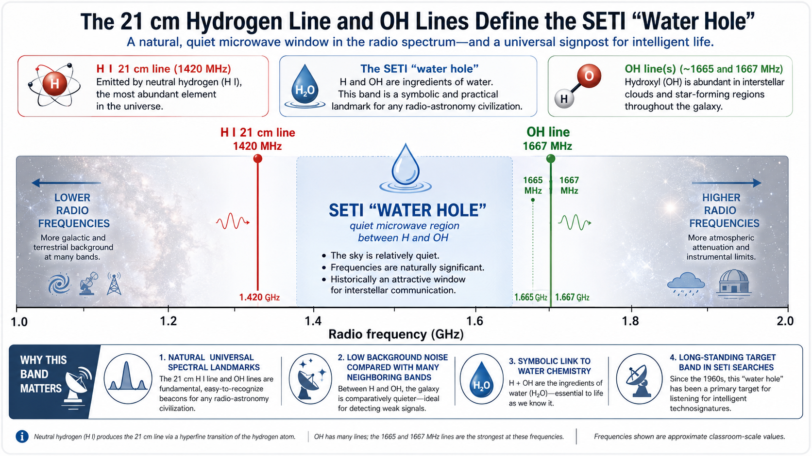
Fig. 11.6 Cocconi and Morrison emphasized the 1420 MHz hydrogen line because neutral hydrogen is common and scientifically obvious to radio astronomers anywhere in the Galaxy. The nearby region between hydrogen and hydroxyl lines is often nicknamed the “water hole,” though there is no guarantee that another civilization would choose it. Image credit: Instructor-created course media.#
Frank Drake reached a similar conclusion and carried out Project Ozma in 1960, pointing a radio telescope at Tau Ceti and Epsilon Eridani near 1420 MHz. The search did not detect an extraterrestrial signal. That null result still mattered. It showed how to conduct a scientific SETI experiment: choose targets, choose frequencies, collect data, reject false alarms, and report the result.
Checkpoint
Why did Cocconi and Morrison focus on a narrow radio beacon rather than ordinary radio leakage from an alien planet?
Modern SETI inherited both the optimism and the caution of those first searches. The optimism is that interstellar communication is physically possible. The caution is that possible does not mean easy, and an unsuccessful search is still data.
The 1420 MHz hydrogen line is attractive because hydrogen is the most abundant element in the universe, and the line is a basic discovery in radio astronomy. Any civilization that studies interstellar gas would likely know it. That does not mean the line is a cosmic meeting place. Another civilization might avoid it because natural hydrogen emission creates background noise. It might choose a nearby quiet frequency, a mathematical multiple, a frequency tied to another physical constant, or an entirely different band.
The important reasoning is not “aliens will choose 1420 MHz.” The important reasoning is that a signal designed to be found should use shared reference points. Hydrogen, hydroxyl, prime numbers, simple ratios, and repeated timing patterns are possible examples because they do not depend on English, human culture, or Earth history. A beacon should reduce the receiver’s uncertainty about where to look and how to recognize structure.
Drake’s Project Ozma was small by modern standards, but it had a modern scientific structure. It made a clear hypothesis about likely targets and frequencies. It observed. It found no signal. It did not then claim that aliens were impossible. It inspired other searches. Good science often works this way: a failed first attempt still teaches people how to ask the next question better.
The same lesson shaped later institutional SETI. A NASA search program began in 1992 using specialized receivers on existing radio telescopes, but Congress canceled it after only about a year. SETI therefore continued mostly through smaller and privately supported programs, while NASA continued broader astrobiology work on the conditions that make life possible. That history matters because SETI is scientifically serious but politically fragile: the search can be rational even when funding is inconsistent.
11.3.2. What kind of signal should we search for?#
There are at least three broad categories of signals SETI might detect. The first is leakage: ordinary radio, television, radar, or other technology used by a civilization for itself. The second is directed communication within a planetary system or between colonies. The third is a beacon deliberately designed to attract attention across interstellar distances.
Leakage is emotionally appealing because it makes alien detection seem accidental: somewhere, another society may be watching its own television while its signals drift into space. The problem is power. Radiation spreads out with distance. The same inverse-square law that dims starlight also weakens radio leakage. Unless the transmitter is extremely powerful or the receiving telescope is far beyond our current capability, ordinary leakage from a civilization like ours would be difficult to detect beyond nearby stars. The slide-deck estimate is deliberately sobering: high-power terrestrial broadcasts began in the late 1940s, so our strongest early signals have expanded only about 75 light-years outward. That sounds large, but ordinary radio and television leakage would be hard for a civilization with our level of receiving technology to detect unless it were within roughly a light-year. More powerful military radar could be detectable farther away, perhaps tens of light-years, but it is not the same as an intentional greeting.
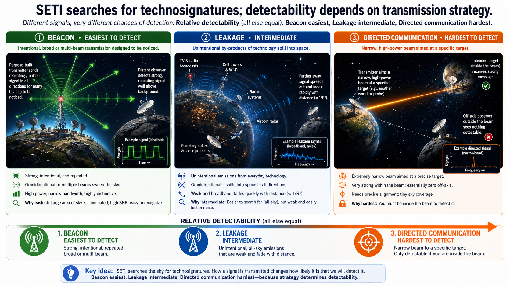
Fig. 11.7 SETI searches can target several kinds of technosignatures. Accidental leakage is weak, directed communication may be narrow and intermittent, and a deliberate beacon is easiest to notice because it is designed for detection. Image credit: Instructor-created course media.#
# Simple inverse-square comparison for signal strength.
# A radio signal that spreads uniformly becomes weaker with distance squared.
near_distance = 1 # distance in light-years for a reference signal
far_distance = 10 # farther distance in light-years
relative_strength = (near_distance / far_distance)**2
print(f"At {far_distance} light-years, the signal is {relative_strength:.2f} times as strong as at {near_distance} light-year.")
print("That means it is 100 times weaker.")
At 10 light-years, the signal is 0.01 times as strong as at 1 light-year.
That means it is 100 times weaker.
A deliberate beacon solves part of this problem. It can be narrowband, strong, repeated, and aimed. Natural astrophysical sources tend to produce broad emission or emission tied to known physical processes. A very narrowband signal that drifts in frequency as expected from the motion of a rotating planet or orbiting transmitter would be suspicious. Repetition also matters. A signal seen once may be interference. A signal seen repeatedly by multiple instruments is much harder to dismiss.
Science fiction often imagines a message hidden inside a familiar broadcast. Contact uses this idea when a signal includes Earth’s own early television transmission. The concept is useful because it forces us to think about light-travel time. A signal from 75 light-years away would be responding to Earth as it was 75 years before reception. A reply would take another 75 years to get back.
Bandwidth is central to this discussion. A receiver has to be tuned to a band of frequencies, much as an FM radio station occupies part of the 87–108 MHz range. Bandwidth is the width of that frequency range. A broadband signal spreads its power over a wide range of frequencies. That is useful for carrying information quickly, but it makes the signal harder to distinguish from noise at interstellar distances. A television signal uses far more bandwidth than an AM radio signal, so it spreads its power across many more frequencies. A narrowband signal concentrates power into a small frequency range. It may carry little information by itself, but it is easier to notice. A beacon can therefore be simple: “something artificial is here; keep watching.”
Doppler drift provides another clue. A transmitter on a rotating planet, an orbiting spacecraft, or a world moving around a star will not remain at exactly one frequency from our point of view. Its frequency will drift slightly as the relative motion changes. SETI pipelines therefore search not only for narrow tones, but for narrow tones that drift in physically plausible ways. Unfortunately, human-made signals can also drift, reflect, and appear in telescope sidelobes, which is why candidate vetting is so demanding.
Repetition is the difference between a curiosity and a discovery. The sky is full of transient events, and Earth is full of interference. A one-time signal can be interesting enough to follow up, but a signal that repeats with the same structure, from the same sky position, and in independent instruments would be far more powerful. SETI is not looking for a single dramatic moment. It is looking for evidence that survives attempts to disprove it.
Contact clip: the received signal
This clip is useful because it dramatizes several real SETI ideas: a repeated signal, verification by multiple observers, and the emotional difference between “interesting data” and “confirmed contact.” Focus on what the scientists do before believing the signal.
# Light-travel-time example based on a signal source 75 light-years away.
source_distance_ly = 75 # distance to source in light-years
one_way_time = source_distance_ly
round_trip_time = 2 * source_distance_ly
print(f"A signal from {source_distance_ly} light-years away shows us what was transmitted {one_way_time} years ago.")
print(f"A reply-and-response conversation would take at least {round_trip_time} years per round trip.")
A signal from 75 light-years away shows us what was transmitted 75 years ago.
A reply-and-response conversation would take at least 150 years per round trip.
The Arecibo message shows another decoding idea. In 1974, a 3-minute binary message was transmitted toward the globular cluster M13. The message had 1679 bits, and 1679 is the product of two prime numbers: 23 and 73. A receiver could arrange the bits into a 23-by-73 or 73-by-23 grid and notice that one orientation contains structure: numbers, DNA-related chemistry, a human figure, the Solar System, and the Arecibo telescope. This was not a serious attempt at conversation with M13. The message was transmitted only once, so any civilization there would have only one shot to receive it, and the round-trip time is roughly 50,000 years. The globular cluster target was chosen partly because it contains many stars in one telescope beam, improving the odds that someone would be in the direction of the signal. It was mainly a demonstration of technological capability and an example of how a message might be made decodable. More complicated messages could use images or even higher-dimensional structure; Contact imagines exactly that kind of hidden organization.
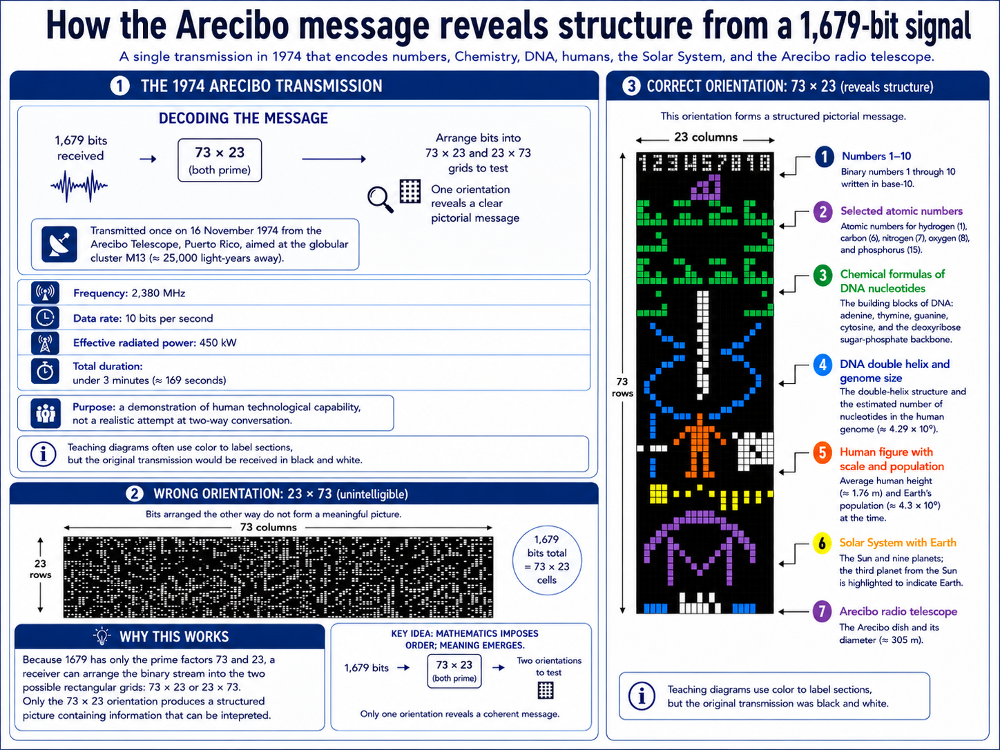
Fig. 11.8 The Arecibo message illustrates why message structure matters. Prime-number dimensions can hint at how a one-dimensional stream of bits should be arranged into a two-dimensional picture. Image credit: Instructor-created course media, based on the public description of the 1974 Arecibo message.#
Checkpoint
Why would a repeated narrowband beacon be easier to recognize as artificial than ordinary broadband radio leakage?
The best SETI signal is not necessarily the one that carries the most information. The first goal is to get noticed. Only after a signal is detected and verified does the decoding problem begin.
11.3.3. Modern radio SETI#
A modern radio SETI search begins with a large antenna or radio array. The telescope collects a broad range of radio frequencies. A low-noise amplifier boosts the weak signal. Then the data are split into many narrow frequency channels so software can search for signals that stand out from the background. The narrower the channel, the easier it can be to distinguish an artificial tone from natural radio emission, but the more data the search must process.
There are two basic observing strategies. A targeted search points at selected stars, often nearby Sun-like stars or systems with known exoplanets. This assumes some locations are more promising than others. A sky survey makes fewer assumptions and scans broad regions, accepting that the most interesting source may not be on our target list. Both strategies are valuable. Targeted searches can go deeper on specific systems. Sky surveys can catch surprises.
Radio astronomers also have to think about where a signal appears in the telescope beam. A large dish is most sensitive in the direction it is pointed, but it can still pick up signals through sidelobes. A strong human-made transmitter far from the target direction can therefore masquerade as a sky signal. Arrays help because the relative timing of the signal at multiple antennas can constrain direction. Even then, satellites and aircraft can create complicated patterns.
A candidate signal should pass several sanity checks. Does it disappear when the telescope points away and return when the telescope points back? Does it appear in another telescope at the same sky position? Does its frequency drift make sense for a transmitter on a rotating or orbiting body? Is it absent from known satellite catalogs and radio-frequency interference databases? Can the raw data be inspected by independent teams? These checks are not bureaucratic obstacles. They are the search.
This is why the SETI community treats the “Wow!” signal cautiously. It had some features one might want, but it failed the most important follow-up test: it did not repeat. A single nonrepeating event can motivate more observations, but it cannot carry the weight of a claim as large as extraterrestrial intelligence.
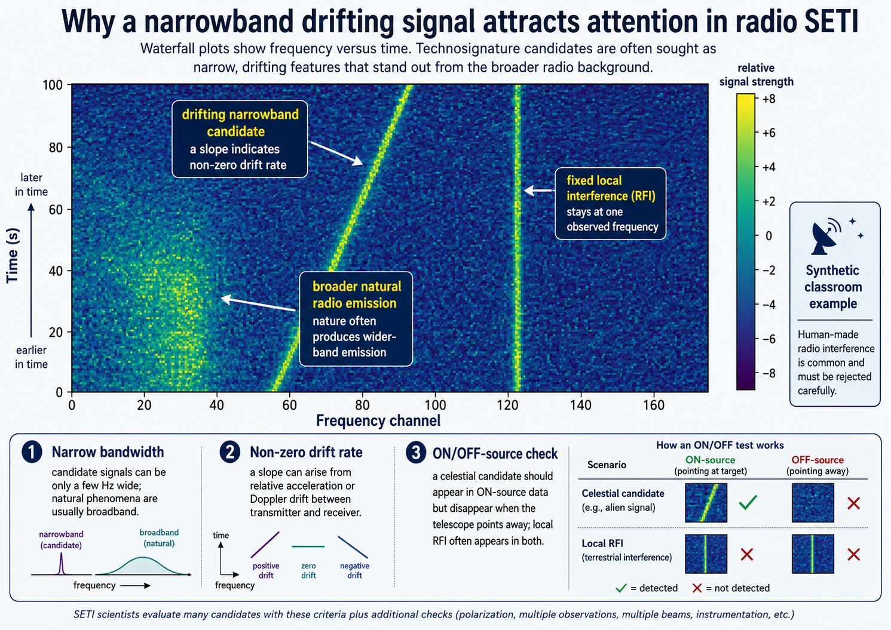
Fig. 11.9 Radio SETI often visualizes data as a waterfall plot: frequency along one axis and time along the other. A drifting narrowband feature can be interesting, but human-made radio frequency interference is common and must be rejected carefully. Image credit: Instructor-created course media.#
Focus on the practical problem of sorting huge amounts of data and rejecting human-made radio interference.
Several current or recent projects illustrate how the field has changed. Breakthrough Listen is a privately funded program designed to survey a million nearby stars and large parts of the Galactic plane. The slide deck describes its data stream in terms of tens of millions of narrow channels, for example about 92 million channels only a few hertz wide. Its papers, such as Isaacson et al. (2017), Enriquez et al. (2017), and Price et al. (2020), show the modern pattern: enormous data sets, many candidate “hits,” and careful rejection of radio frequency interference.
SERENDIP-style surveys use commensal observing, meaning they search SETI data while a telescope is already being used for other astronomy. The slide deck highlights SERENDIP VI as a sky-survey approach with billions of sub-hertz channels, and a Near Star survey using the Allen Telescope Array with more than a billion narrow channels. COSMIC does this with the Karl G. Jansky Very Large Array. Instead of asking for a separate SETI telescope, COSMIC receives a copy of VLA antenna data and processes it independently. The system is described by Tremblay et al. (2024). This approach is powerful because SETI can ride along with many ordinary astronomy observations.
The Allen Telescope Array, operated by the SETI Institute, is another important instrument. It consists of 42 antennas and uses many smaller dishes rather than one giant dish; it can be used for SETI and conventional radio astronomy, including fast radio burst studies. All radio SETI systems share a major problem: Earth is noisy. Radar, satellites, aircraft, cell phones, and other technologies produce narrowband signals. A suspicious signal must be checked against telescope pointing, known satellites, local transmitters, repeated observations, and independent observatories.
Checkpoint
Why does human-made radio interference make SETI both harder and more scientifically careful?
One long-term idea is to use the far side of the Moon as a radio-quiet site. Earth blocks much of our planet’s radio noise there. That does not make lunar SETI easy, but it shows how the search may eventually depend on choosing quieter observing environments, not merely building faster computers.
Modern SETI is also a data-science problem. A survey may produce millions of initial hits. Most are not mysterious. They are aircraft, satellites, radar, electronics, telescope artifacts, or known human transmitters. The challenge is to reject false positives without accidentally rejecting the rare signal one hopes to find. This is why SETI papers often spend so much space describing filters, thresholds, calibration, and follow-up criteria.
Machine learning can help, but it does not remove the need for scientific judgment. A classifier can rank candidates by how unusual they look, but unusual does not mean extraterrestrial. The training data are dominated by natural and human-made signals because we do not have confirmed alien examples. That means algorithms can help search enormous data sets, but humans still need to understand what the algorithm is selecting and why.
The most credible SETI searches publish enough detail for others to understand the search limits. They report frequency coverage, target lists, sensitivity, integration time, channel width, drift-rate range, and rejection methods. This is what turns a null result into useful science. A null result with no search limits is just a disappointment. A null result with clear limits tells future researchers where they do not need to repeat the same search.
Radio SETI also benefits from ordinary astronomy. Pulsar surveys, fast-radio-burst searches, hydrogen-line observations, and continuum surveys all develop instruments and software that can be reused for technosignatures. COSMIC is an example of this convergence. It allows SETI to happen in parallel with other VLA science, increasing the time on sky without requiring every observation to be a dedicated SETI observation.
11.3.4. Optical SETI and other wavelengths#
Radio is not the only possible communication method. Any form of electromagnetic radiation can carry information. Fiber-optic internet already uses light to move information efficiently on Earth. The idea of optical signaling is older than modern lasers: in the 19th century, Carl Friedrich Gauss and others imagined using giant mirrors, lamps, or even large geometric plantings on Earth to make visible signals for the Moon or Mars. Schwartz & Townes (1961) proposed that optical masers, now usually called lasers, could be used for interstellar communication. Radio dominated early SETI partly because radio beams are energetically favorable and because interstellar dust scatters visible light. But a narrow optical or infrared beam aimed at a known target could still be useful.
An optical beacon would not need to shine continuously. A continuous beam could be lost in the glare of the host star, and a light that never changes does not carry much information. Short laser pulses are more distinctive. A nanosecond pulse, roughly \(1\ \mathrm{ns}\) long, can be extremely bright for an instant, and repeated pulses could encode timing patterns like a cosmic Morse code. Repetition matters because a pulse lasting only a tiny fraction of a second is easy to miss if the receiving telescope is not looking at the right place at the right time.
Optical and infrared SETI also change the target strategy. A radio beacon might be designed to sweep broadly or transmit continuously. A laser beacon is more likely to be narrow, both in angle and time. That means the transmitter may need to know where Earth is, or at least where promising planets are. One possibility is that civilizations target planets that transit their stars from the transmitter’s point of view, because transits reveal that the planet exists and may allow atmospheric study. Earth itself is visible as a transiting planet only from a thin strip of the sky.
Short pulses also create a timing problem. A survey has to be looking at the right place at the right time. Wide-field optical surveys help by watching large areas at once. Repetition helps because a transmitter that repeats its pulses gives receivers multiple chances. The slide deck’s idea of pulses repeated many times per day is reasonable for that reason: a signal that repeats is more robust against bad weather, daylight, telescope scheduling, and chance. Modern optical and near-infrared SETI experiments such as LaserSETI, PANOSETI, and NIROSETI use fast detectors, including photomultiplier-style approaches, to search for brief flashes. Basic experiments suggest that powerful pulses could be detected across hundreds of light-years, with the slide deck using about 500 light-years as a useful scale.

Fig. 11.10 This concept image shows why optical SETI is not just “point one telescope at one star.” A PANOSETI-style observatory uses many small telescopes to watch a wide area of the sky for very short optical or near-infrared flashes. That design matches the search problem: if laser pulses are brief and rare, the instrument must monitor a large sky area repeatedly rather than stare at one target for a short time. Source: UC Berkeley News. Graphic courtesy of Shelley Wright, UC San Diego.#
The optical search therefore complements radio rather than replacing it. Radio is excellent for broad, persistent, energetically efficient beacons. Optical and infrared signals can carry large amounts of information in tight beams and may be easier for a civilization to aim deliberately at known targets. A mature SETI program should search more than one wavelength because no one knows the alien engineering solution in advance.
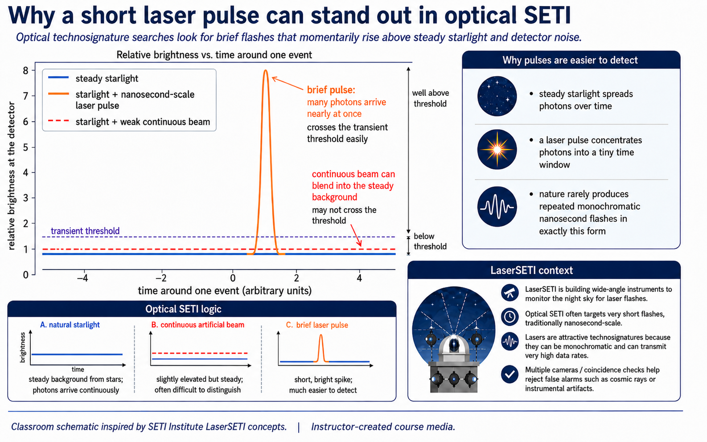
Fig. 11.11 Optical SETI searches for brief flashes or pulses that can momentarily stand out against steady starlight. The concept is different from radio SETI, but the logic is similar: look for signals that nature is unlikely to produce in that exact form. Image credit: Instructor-created course media.#
# A nanosecond is short, but light is fast.
# This estimates the physical length of a 1 ns pulse in space.
speed_of_light = 3.0e8 # speed of light in meters per second
pulse_duration = 1.0e-9 # one nanosecond in seconds
pulse_length = speed_of_light * pulse_duration
print(f"A 1 ns light pulse is about {pulse_length:.2f} meters long in space.")
A 1 ns light pulse is about 0.30 meters long in space.
Projects such as LaserSETI, PANOSETI, and NIROSETI explore this part of parameter space. LaserSETI aims to monitor large areas of the sky for optical laser flashes. PANOSETI is designed to look for fast optical and near-infrared transients over wide fields. NIROSETI focuses on near-infrared wavelengths, which can pass through dust better than visible light. These projects do not assume aliens must use our favorite technology. They expand the search.
Could civilizations use ultraviolet light, X-rays, neutrinos, or gravitational waves? In principle, yes. SETI cannot rule out exotic communication methods. In practice, searches begin where physics and engineering make the signal plausible and where our instruments can actually look. Radio, optical, and infrared searches are not guaranteed to be correct. They are simply the most practical places to start.
Checkpoint
Why might a short optical or infrared pulse be a better SETI target than a continuous visible beam?
The broader lesson is that SETI is a search through a huge “parameter space”: sky position, frequency or wavelength, time, polarization, bandwidth, repetition rate, and signal strength. A null result does not mean there is no technology in the Galaxy. It means we did not find the kinds of technology we searched for within the limits of the search.
Optical SETI has a different false-positive problem than radio SETI. The atmosphere produces flashes from meteors, cosmic rays can hit detectors, satellites can glint, and astronomical transients can brighten briefly. A serious optical SETI system therefore benefits from multiple detectors separated by distance. A real astronomical flash should appear in the right direction at multiple sites, while a local detector artifact or nearby event may not.
Infrared searches are attractive because dust blocks visible light more strongly than infrared light. The Milky Way’s dark lanes are not empty; they are dusty regions where visible starlight is absorbed and scattered. An infrared beacon could travel through dusty regions more effectively, and infrared detectors have improved dramatically. The drawback is that infrared astronomy has its own background noise, including thermal emission from telescopes, the atmosphere, and dust.
The possibility of exotic communication is useful mainly as a humility check. Neutrinos pass through matter easily, and gravitational waves travel across the universe, but both are extremely difficult to generate and detect compared with electromagnetic radiation. A civilization far beyond us might use methods we do not imagine, but a search program has to begin with technologies that are physically plausible, energetically reasonable, and observable by instruments we can build.
11.3.5. Modern SETI: beyond one radio channel#
Early SETI searches made a reasonable guess: if another civilization wanted to get attention across interstellar space, it might transmit a narrowband radio signal near a scientifically meaningful frequency. That logic still matters, but it is no longer the whole strategy. Modern SETI can search more broadly because astronomy itself has changed. We now know that planets are common, we can identify nearby systems worth watching, and new surveys collect enormous amounts of data across time, wavelength, and sky position.
Laser SETI is one example of this shift. Radio waves are useful because they travel well through interstellar space, but their long wavelengths make very narrow beams difficult. Optical and infrared lasers have much shorter wavelengths, so a beam can be aimed much more tightly. That matters if an advanced civilization already knows which nearby planets are biologically interesting. Instead of broadcasting in all directions, it could send targeted pulses toward worlds likely to notice.
The larger lesson is that modern SETI is becoming less about one imagined message format and more about anomaly detection. A technosignature might appear as a narrow spectral feature, a short optical pulse, an unusual Doppler-shifting signal, or a strange pattern hidden in data collected for another purpose. This does not make every anomaly exciting. It means the search is becoming broader, more automated, and more connected to ordinary astronomy surveys.
This video provides an update on modern SETI strategy. Focus on three changes: why laser or infrared signals could be more tightly targeted than radio, why known exoplanets make targeted searches more plausible, and why future SETI may depend on finding unusual patterns in large astronomy surveys rather than only listening near one expected radio frequency.
11.3.6. Astroengineering and technosignatures#
Not every technosignature has to be a message. A civilization might change its environment in ways that become visible even if it is not trying to talk to us. Human technology already modifies Earth’s atmosphere with industrial gases, city lights, and waste heat. Future telescopes may be able to search for some planetary-scale signs of technology, such as artificial atmospheric compounds, unusual night-side lighting, or excess heat.
Nikolai Kardashev proposed a scale for thinking about technological energy use in Kardashev (1964). A Type I civilization uses energy on the scale of a planet. A Type II civilization uses energy on the scale of a star. A Type III civilization uses energy on the scale of a galaxy. These categories are not predictions. They are a way to ask what an extremely energy-intensive civilization might look like from far away.
The most famous Type II idea is a Dyson sphere or Dyson swarm, first discussed in modern form by Dyson (1960). The basic idea is to surround a star with energy collectors. A solid shell is physically implausible, but a swarm of orbiting collectors is easier to imagine. Such a structure would not make the star disappear. It would absorb visible starlight and reradiate energy as infrared waste heat.
Use the tabs below to compare the Kardashev scale by energy source, likely technosignature, and detectability.
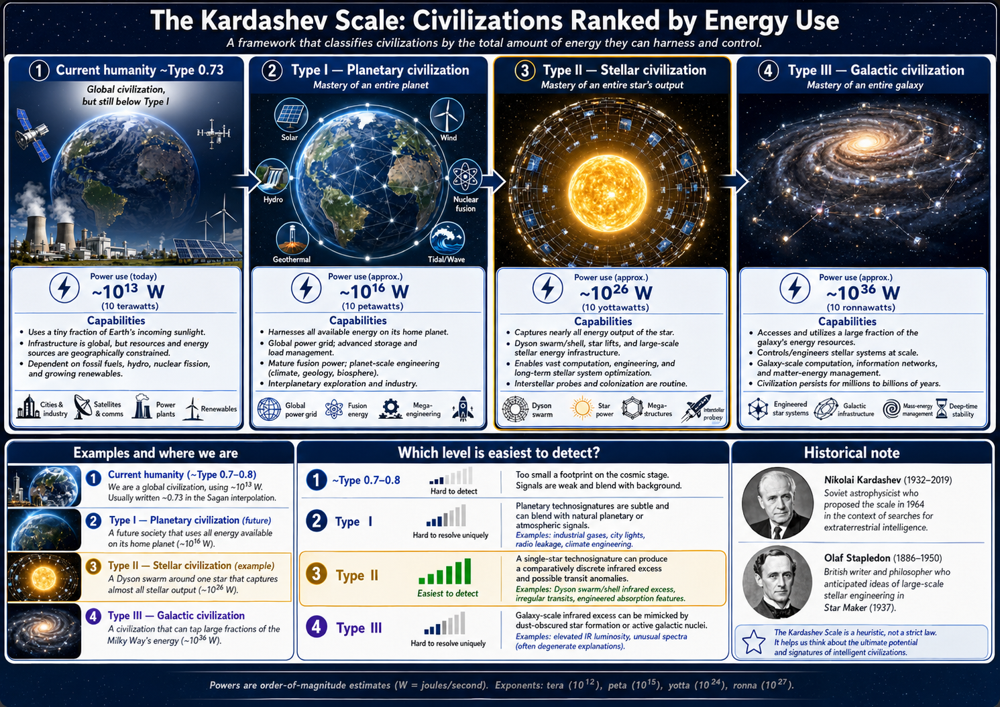
Fig. 11.12 This overview figure should be read from left to right as a change in scale: one planet, one star, and then many stars across a galaxy. The marker for modern humanity sits below Type I to emphasize that the Kardashev categories are hypothetical search categories, not a ladder we have already climbed. The detectability notes are the key comparison: planetary-scale signs are spatially tiny, galaxy-scale signs are hard to interpret uniquely, and stellar-scale waste heat gives the cleanest current search target. Original scale from Kardashev (1964). Image credit: Instructor-created course media.#
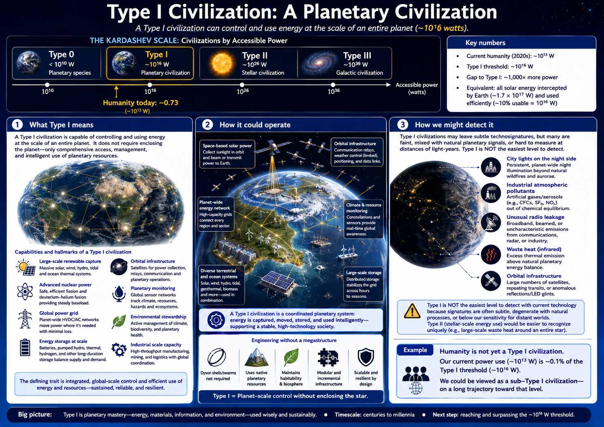
Fig. 11.13 This figure organizes Type I technosignatures by where the evidence would appear: in the atmosphere, on the night side, in emitted radio waves, in surface patterns, or as a small thermal excess. The important visual lesson is that none of these signs is isolated from the planet itself. A telescope would not see “technology” directly; it would see a spectrum, light curve, image pixel, or heat signal that must be separated from clouds, volcanism, weather, chemistry, and ordinary planetary variability. Image credit: Instructor-created course media.#
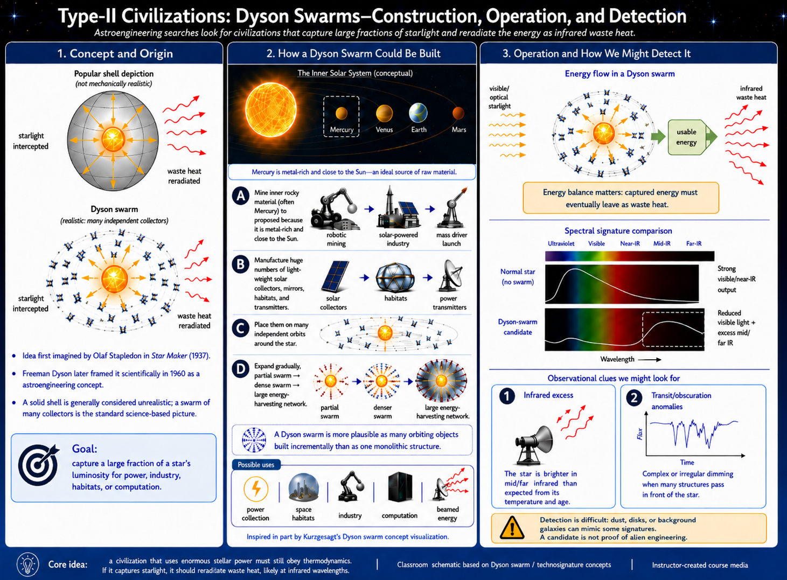
Fig. 11.14 The three panels separate a Dyson-style idea into concept, construction, and observation. Panel 1 contrasts the familiar solid-shell drawing with the more realistic swarm of many independent collectors. Panel 2 shows why a swarm is usually imagined as an incremental engineering project rather than a single object: material is mined, collectors are built, and orbits are gradually populated. Panel 3 is the observational payoff: intercepted starlight does not disappear from the universe, so the most useful signature is a shift from ordinary starlight toward excess infrared waste heat. Concept framed scientifically by Dyson (1960). Image credit: Instructor-created course media; inspired in part by Kurzgesagt’s Dyson swarm concept visualization.#
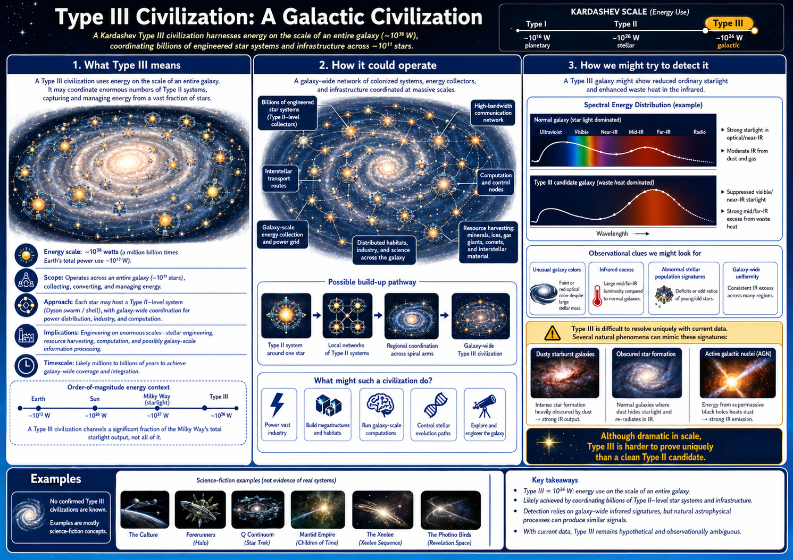
Fig. 11.15 This figure shifts the search problem from individual stars to whole galaxies. The useful comparison is between a normal galaxy, where starlight and dust emission follow familiar patterns, and a hypothetical galaxy where large amounts of stellar energy have been reprocessed into infrared light. The caution symbols matter: a galaxy can look infrared-bright because of dust, star formation, or an active galactic nucleus, so a Type III candidate would need to be unusual in more than one way. Infrared survey searches using this logic include Wright et al. (2014) and Griffith et al. (2015). Image credit: Instructor-created course media.#
Technosignature searches increasingly use the same logic as biosignature searches: a signal is not enough unless false positives are considered. Oxygen in an exoplanet atmosphere could be biological, but it could also arise through abiotic processes under some conditions. Infrared excess could be waste heat, but it could also come from dust. Artificial pollutants could imply industry, but unusual photochemistry or volcanism would need to be ruled out. The scientific strength comes from combinations of evidence, not from one weird measurement.
This is why technosignatures are not a fringe add-on to astrobiology. They use the same tools: spectroscopy, imaging, time-domain astronomy, atmospheric modeling, orbital dynamics, and statistics. The difference is the interpretation. Instead of asking whether biology is modifying a planet, we ask whether technology is modifying a planet, star, or galaxy.
It is also worth noticing that technosignatures could outlive civilizations. A radio beacon might stop when the society stops maintaining it. But atmospheric pollutants could linger for a while, megastructures could remain in orbit, and artifacts might persist on airless surfaces for millions of years. SETI is often framed as listening for living neighbors, but some technosignature searches are more like archaeology at astronomical distances.
Focus on the difference between a dramatic science-fiction megastructure and the observational signature scientists would actually search for: excess infrared radiation.
Searches for large-scale waste heat have used infrared sky surveys such as WISE. The G-HAT project discussed the logic in Wright et al. (2014), and a search of 100,000 galaxies was reported in Griffith et al. (2015). These studies did not find convincing evidence for Kardashev Type III civilizations dominating entire galaxies. That is a meaningful null result: it does not rule out technology, but it argues against extremely obvious galaxy-spanning waste-heat signatures in the searched sample.
Checkpoint
Why would a Dyson-style civilization be easier to search for in infrared light than in visible light?
Astroengineering technosignatures are powerful because they do not require a civilization to aim a message at us. They are also risky because unusual infrared emission can have natural explanations. As always, the scientific task is not to find something weird and stop. The task is to compare explanations.
Type I technosignatures may be more realistic than Type II or Type III ones. A planet like modern Earth already has artificial night lighting, industrial chemistry, radio leakage, and atmospheric pollutants. Detecting those signs on an exoplanet is far beyond most current capabilities, but future direct-imaging missions may eventually characterize rocky planets well enough to notice unusual atmospheric compounds. A pollutant would not automatically prove technology; it would have to be evaluated against geology, photochemistry, and biology.
Waste heat is harder to hide because it follows basic thermodynamics. Any civilization that uses energy must eventually dump lower-quality heat into its environment. A modest civilization’s waste heat is too faint to detect across interstellar distances. A civilization using a large fraction of a star’s luminosity might be detectable because the energy has to go somewhere. That is the reasoning behind infrared Dyson-swarm searches.
Kardashev Type III civilizations are the most dramatic and the easiest to rule out in broad strokes. If an entire galaxy were heavily reprocessed by technology, it might show a very unusual infrared excess and reduced visible starlight. Searches have not found convincing examples. That does not rule out advanced civilizations. It argues that galaxy-spanning, high-waste-heat civilizations are not common in the searched samples, or that advanced societies do not behave in that way.
11.3.7. If SETI succeeds#
No SETI experiment has confirmed an extraterrestrial transmission. The most famous false alarm is the 1977 “Wow!” signal detected by Ohio State’s Big Ear radio telescope. It was strong and narrowband, but it was never seen again despite repeated attempts. A one-time signal is difficult to interpret because it could be interference, a transient natural source, or an instrumental artifact. The “Wow!” signal remains interesting, but it is not confirmed contact. The slide deck notes one especially important reason for caution: Ohio State’s instrument had two receivers, and the signal appeared in only one of them. That does not prove it was interference, but it blocks the stronger conclusion that it was a verified extraterrestrial transmission.
Ohio State / Wow! signal history
This video gives the historical context behind the famous printout. Focus on why the detection was exciting, why the Big Ear telescope setup mattered, and why a one-time signal remains scientifically incomplete even when it looks like a strong SETI candidate.
SETI researchers remain optimistic because computing power, telescope sensitivity, and survey size continue to grow. This is the SETI version of Moore’s-law optimism: faster computing lets researchers search more channels, more targets, and more complicated signal patterns. If the Galaxy contained something like \(N = 10{,}000\) active transmitting civilizations, a million-target survey such as Breakthrough Listen could plausibly make the first detection within decades, depending on beaming, sensitivity, and lifetime. That is not a prediction; it is a scale argument for why bigger searches matter. A search that would have been impossible in 1960 is routine today. Still, a real detection would not be announced casually. It would need confirmation by independent observers, careful checks against human interference, and open data sharing so the result could be tested.
The International Academy of Astronautics has developed the Declaration of Principles Concerning Activities Following the Detection of Extraterrestrial Intelligence for exactly this reason. The basic idea is straightforward: verify before announcing, make the evidence available, coordinate follow-up observations, and treat any reply as a global decision rather than the choice of one person or one research group. The protocol matters because a false announcement could damage public trust, and a real signal would belong to humanity.
A detection would also raise a decoding problem. Science fiction often assumes that alien messages will be mathematical because mathematics may be one of the most universal languages available. Human messages sent into space have often been pictorial, as with the Arecibo message, because pictures can carry information about biology, chemistry, and location. Even if a message were real and decodable, two-way conversation would be slow across interstellar distances. A detected message might not expect a reply at all, and the content might not be friendly. Confirmation would answer one question—whether we are alone—but it would create many new scientific, political, and ethical questions.
Contact clip: verification and response
This clip is useful for discussing what happens after a possible detection. Focus on verification, politics, interpretation, and why a reply is not simply a technical problem.
Decoding a signal may be harder than detecting one. Science fiction often assumes mathematics is universal, and there is truth in that: prime numbers, ratios, and physical constants are good candidates for shared structure. But meaning is not automatic. A signal could be a beacon with no message. It could be a data stream we cannot decode. It could be a message not intended for us. It could even be deliberately deceptive or hostile, though that possibility is speculative.
Checkpoint
Why would independent verification be the first priority after a possible SETI detection, even before trying to decode the message?
A confirmed SETI signal would prove that we are not the only technological species in the universe. It would not automatically tell us whether the senders are friendly, nearby, biological, still alive, or interested in conversation. The first discovery would answer one question and open many more.
The post-detection problem is partly scientific and partly social. Scientifically, observers would want the signal recorded by independent telescopes, checked against interference databases, localized on the sky, and monitored for repetition. They would also want raw data preserved so other teams could reanalyze it. The first announcement should be based on evidence that can survive public scrutiny.
Socially, a confirmed signal would create pressure for speed, secrecy, interpretation, and political advantage. Some people would want immediate disclosure. Others would worry about panic, misinformation, or national security. Some would demand a reply. Others would argue that replying without global consent is irresponsible. These debates are not imaginary. They are why post-detection protocols exist.
Communication across interstellar distances also changes the meaning of “conversation.” A civilization 100 light-years away cannot chat with us. A question and answer would take 200 years. A civilization thousands of light-years away might send messages as archives, monuments, warnings, or cultural artifacts rather than conversation starters. SETI may discover presence before it discovers dialogue.
11.4. UFOs, UAPs, and Alien Visitation#
11.4.1. What “unidentified” means#
The modern UFO era began in 1947, when pilot Kenneth Arnold reported seeing fast-moving objects near Mount Rainier. Newspaper coverage helped create the phrase “flying saucers,” even though Arnold’s description was more about motion than saucer-shaped craft. Public interest grew quickly, and UFO reports became part of a larger cultural pattern. In earlier centuries, people reported angels, demons, fairies, witches, ghosts, or mysterious airships. In the space age, ambiguous lights and experiences were increasingly interpreted through extraterrestrial visitation.
The newer term UAP, usually “unidentified anomalous phenomena,” is useful because it avoids some of the cultural baggage of UFO. It also makes the key point clearer: unidentified means not yet identified. It does not mean extraterrestrial. A UAP could be a balloon, drone, aircraft, satellite, meteor, weather effect, sensor artifact, classified military technology, or something genuinely unknown. “Unknown” is a statement about the current evidence, not a license to jump to the most exciting conclusion.
NASA’s 2023 UAP Independent Study Team report emphasized that UAP are a scientific opportunity only if they are studied with better data, calibrated sensors, and rigorous methods. NASA’s public FAQ states that there are no data supporting the idea that UAP are evidence of alien technologies. The All-domain Anomaly Resolution Office (AARO) similarly states that it has found no evidence of extraterrestrial technology, while continuing to investigate reports. That is the right posture: investigate, improve data, and do not outrun the evidence.
The shift from UFO to UAP also reflects a shift in domain. “Flying object” implies something in the air. “Anomalous phenomena” leaves room for detections in air, sea, space, or across sensor systems. That broader language is useful for government reporting, but it can also make public interpretation fuzzier. A broad category will include many ordinary things until the data are sorted.
The scientific problem is not that people report strange things. People should report strange things, especially pilots, radar operators, astronomers, and others who regularly observe the sky. The problem is that reports collected for safety or intelligence purposes are not always collected in a way that answers scientific questions. A pilot report may be enough to warn other aircraft, but not enough to determine propulsion physics. A short video may be enough to identify a training-range hazard, but not enough to infer extraterrestrial origin.
The key habit is to separate the observation from the explanation. “A pilot reported an object she could not identify” is an observation. “The object was alien technology” is an explanation. The explanation requires additional evidence. Keeping those sentences separate prevents the most common mistake in UFO/UAP reasoning.
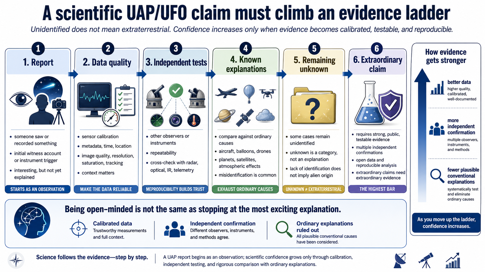
Fig. 11.16 A UAP report begins as an observation that someone or some instrument could not immediately identify. Scientific evidence becomes stronger when the data are calibrated, independently checked, and compared against ordinary explanations. Image credit: Instructor-created course media.#
This video treats UAP as a data-quality problem rather than as a punchline. Focus on what kinds of observations would make UAP studies more scientific.
Classic UFO stories show why this distinction matters. The Roswell incident began with debris found in New Mexico in 1947 and quickly became a story about a “flying disk.” Later claims added recovered alien bodies and government secrecy. The best-supported historical explanation is that the debris was associated with Project Mogul, a classified balloon program designed to monitor Soviet nuclear tests. The story changed because secrecy, Cold War anxiety, and popular imagination filled gaps in the public record.

Fig. 11.17 This image gives you a concrete example of how an ordinary explanation can look strange without context. Project Mogul balloon trains used balloons, reflectors, and instrumentation that could produce confusing debris if recovered by someone who did not know the project existed. The Roswell lesson is not that every UFO report has this exact explanation; it is that secrecy, incomplete information, and unusual-looking hardware can turn a terrestrial event into an alien-technology story. Source: Wikimedia Commons, from The Roswell Report: Fact Versus Fiction in the New Mexico Desert. Image credit: United States Air Force; public domain.#
{kind=link}
Crop circles offer a different lesson. Complex geometric patterns in English fields were widely promoted as mysterious or extraterrestrial. In 1991, Doug Bower and Dave Chorley publicly demonstrated that they had made many of them using simple tools. The important lesson is not that every mystery is a hoax. The lesson is that a claim can seem impressive until someone tests whether ordinary methods can reproduce it.
This video is useful near the crop-circle discussion because it shows how a mysterious-looking pattern can have an ordinary human explanation. Focus on the evidence process: the pattern may look impressive from above, but the key question is whether the explanation requires extraterrestrial activity or whether people can reproduce the effect using simple tools, planning, and teamwork.
Checkpoint
Why is “unidentified” not the same as “extraterrestrial,” even when the witness is sincere or highly trained?
UFO and UAP reports deserve neither ridicule nor uncritical belief. They deserve the same evidence standards as any other claim about the natural world.
The UAP topic is also a good place to practice the distinction between sincerity and evidence. A witness can be honest and still mistaken. A pilot can be skilled and still lack enough information to identify an object. A sensor can record real data and still be affected by glare, range ambiguity, software processing, or missing context. Respecting witnesses does not require accepting their interpretation.
Modern military UAP reports often involve classified sensors or incomplete public data. That creates a frustrating situation: the public may see a short clip without the full metadata needed to evaluate it. Speed, size, distance, and acceleration cannot be trusted without range information and sensor geometry. This is why “it moved impossibly fast” may be a conclusion from incomplete geometry rather than a measured fact.
A scientific UAP program would ideally use standardized instruments, multiple viewing angles, calibrated cameras, radar or lidar where appropriate, precise timing, weather data, satellite catalogs, and transparent analysis. Without that infrastructure, many reports remain permanently ambiguous. Ambiguity is not evidence for aliens; it is evidence that the data were not good enough to settle the question.
11.4.2. Why strong claims require stronger evidence#
Eyewitness testimony matters in everyday life, but it is weak evidence for extraordinary scientific claims. People can misjudge distance, speed, size, and altitude, especially in the sky where there are few reference points. Cameras can mislead when exposure, focus, compression, or sensor artifacts are not understood. Military pilots and trained observers are valuable witnesses, but they are still human. Training reduces some errors; it does not eliminate perception, expectation, or interpretation.
Sleep paralysis illustrates the danger of interpreting a real experience too quickly. During REM sleep, the body is normally inhibited so we do not act out dreams. Sometimes a person wakes before that inhibition has fully lifted. The result can be terrifying: paralysis, pressure on the chest, sensed presence, and vivid imagery. Different cultures have interpreted similar experiences as witches, demons, ghosts, or alien abductions. The experience is real. The interpretation may not be.
Focus on the difference between what a person experiences, how the brain interprets that experience, and what kind of evidence would be needed before concluding that an external visitor was involved.
Historical connection: Sagan’s The Demon-Haunted World
Carl Sagan’s The Demon-Haunted World: Science as a Candle in the Dark treated alien-abduction claims as a serious test case for scientific thinking. His point was not that people were lying or foolish. It was that vivid, sincere experiences can still be shaped by sleep, fear, memory, culture, and expectation. In a UAP context, that distinction matters: the experience may be real to the witness, but the interpretation still has to be tested against independent evidence.
Government-cover-up claims need careful handling. Governments do keep secrets, especially about military technology. That does not mean every claim of hidden alien technology is plausible. Large conspiracies become harder to maintain as the number of people and amount of time increase. Grimes (2016) modeled this general problem for conspiratorial beliefs. The model is not a magic debunker, but it captures a useful point: a decades-long cover-up involving many people, agencies, contractors, scientists, and physical artifacts becomes increasingly difficult to sustain without strong leaks or verifiable evidence.
It is true that absence of evidence is not automatically evidence of absence. We cannot prove a universal negative by saying, “we have not seen it.” But Occam’s razor still matters: when a claim requires alien spacecraft, secret crashes, hidden bodies, decades of perfect concealment, and no independently testable artifacts, it is less likely than explanations that require ordinary human error, classified military technology, balloons, aircraft, satellites, or incomplete data. The burden of evidence rises with the number of extra assumptions.
UAP can be studied scientifically when researchers collect high-quality data, calibrate instruments, preserve metadata, and make results testable. This position treats “unidentified” as a starting point for investigation, not as a conclusion.
Jumping from “I cannot identify this” to “aliens visited Earth” skips the work of ruling out ordinary explanations. This position turns uncertainty into a preferred answer before the evidence is strong enough.
Ridicule can discourage witnesses from reporting useful data and can prevent scientists from improving observation methods. This position may reject weak claims correctly, but it can also throw away observations that deserve better documentation.
Checkpoint
What kind of evidence would move a UAP claim from “interesting report” toward “strong scientific case”?
The scientific middle ground is not boring. It is the only path that can actually work. Be open enough to investigate, but strict enough that the conclusion depends on evidence.
Extraordinary evidence does not have to mean impossible evidence. It means evidence proportional to the claim. A blurry video may be enough to show that someone saw a light. It is not enough to show interstellar travel. A radar track may be enough to show an object or artifact in the data. It is not enough to identify non-human technology unless the ordinary explanations have been carefully ruled out.
Physical samples would matter, but even samples require context. A strange alloy is not automatically extraterrestrial. Scientists would ask where it came from, whether the chain of custody is reliable, whether its isotopic ratios are unusual, whether its structure can be manufactured on Earth, and whether independent labs reproduce the result. The stronger the claim, the more important independent replication becomes.
This standard protects real discoveries. If extraterrestrial technology were ever found, weak evidence would not be enough to persuade the world. The discovery would need to be tested so thoroughly that the conclusion does not depend on trust in a single witness, agency, celebrity, or scientist. Skepticism is not the enemy of discovery. It is how a discovery becomes reliable.
11.4.3. ʻOumuamua, expertise, and the temptation of the most interesting explanation#
The same caution applies to claims made by highly trained scientists. In 2017, astronomers discovered 1I/ʻOumuamua, the first known interstellar object passing through the Solar System. It came from outside the Solar System, passed near the Sun, and then headed back into interstellar space. It was unusual in several ways: its brightness varied strongly, it followed an interstellar path, and its motion showed a small non-gravitational acceleration. Micheli et al. (2018) reported the acceleration and interpreted it as most likely due to comet-like outgassing, even though obvious gas and dust were not detected.
That last detail is what made the object so tempting. Comets often accelerate slightly because sunlight warms their surface ices, producing gas jets that act like tiny rockets. ʻOumuamua showed the acceleration, but not the obvious cometary display. It also showed large brightness changes, which implied either an elongated, flattened, or otherwise unusual shape. The data were real. The question was what kind of model the data justified.
Avi Loeb and Shmuel Bialy argued that solar radiation pressure on a very thin object could explain the acceleration, and they discussed the possibility that such an object could be artificial, perhaps a lightsail (Bialy & Loeb (2018)). That idea received enormous public attention. It was not impossible in the logical sense. But “not impossible” is a low bar. A scientific hypothesis has to do more than explain one weird feature after the fact. It should survive comparison with other hypotheses and make predictions that could distinguish it from them.
The Cool Worlds analysis is useful because it does not simply laugh off the artificial-object hypothesis. Instead, it asks what each part of the argument is actually doing. Some of the proposed “strange facts” weaken once observational bias and incomplete population statistics are considered. For example, the fact that ʻOumuamua passed close enough to Earth to be discovered is not automatically suspicious; nearby objects are the ones our surveys are most likely to detect. Its velocity relative to the local standard of rest is interesting, but not necessarily artificial, because young planetary systems can eject fragments with similar motions. Its reflectivity also appears less exceptional once compared with the range of asteroid reflectivities known in the Solar System.
The strongest parts of the mystery are the shape information and the non-gravitational acceleration. The shape is inferred from brightness changes, not from a resolved photograph, so several geometries can fit the data. The acceleration is harder to explain because no obvious gas or dust was seen. Those are real puzzles. But a puzzle is not the same as a conclusion. Other natural explanations have been proposed, including unusual ice chemistry and radiolytically produced hydrogen, as in Bergner & Seligman (2023). The object left before we could collect decisive data.
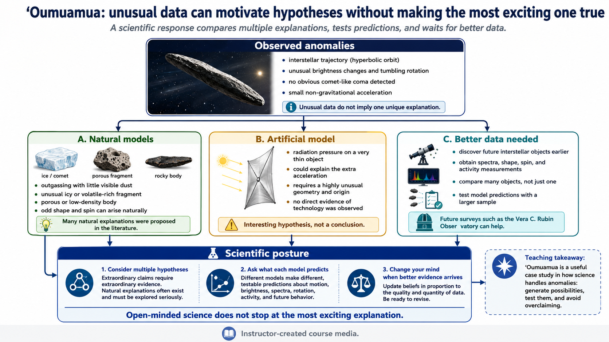
Fig. 11.18 Read this figure from the top down. The top box lists the observations that make ʻOumuamua scientifically interesting. The middle row separates three possible responses: build natural models, consider an artificial lightsail model, and admit that better data are needed. The bottom row shows the scientific posture you should take away from the case: unusual data can motivate multiple hypotheses, but each model has to make testable predictions before it deserves strong confidence. Image credit: Instructor-created course media.#
This video is useful because it models how to evaluate an extraordinary claim without dismissing it automatically. Focus on how Kipping separates the observations from the interpretation, compares each “strange fact” with possible natural explanations, and argues that the most flexible explanation is not necessarily the best explanation.
This is where the lesson becomes personal for scientists. Highly trained people are not immune to overcommitting to the most interesting explanation. Expertise can help someone notice a possibility that others miss. It can also make a speculative claim sound more established than it is. The right response to ʻOumuamua is not to mock the artificial-object hypothesis and not to build a belief system around it. The right response is to ask what observations would distinguish the hypotheses, then collect better data when the next interstellar object appears.
A useful way to say this is that extraordinarily flexible models require extraordinarily strong evidence. “Aliens did it” can be made to fit almost any anomaly if we are allowed to invent the technology, motive, and engineering details after seeing the data. That flexibility is a weakness unless the model also makes risky predictions that natural models would not make. A lightsail hypothesis would become stronger if future objects showed a consistent pattern of acceleration, shape, orientation, and material properties that natural processes could not explain. It remains weak if it only fills gaps in our current understanding.
That same attitude should guide UFO and UAP claims. We should be open to the idea that surprising things can happen. We should not become obsessed with extraterrestrial explanations if the evidence eventually points elsewhere. Science works because it lets us be curious without letting curiosity overrule reality.
The ʻOumuamua case also shows the difference between a hypothesis and a public narrative. In a scientific paper, a speculative hypothesis can be one possibility among several. In public discussion, the most exciting possibility can quickly become the headline. Once that happens, later natural explanations may feel disappointing even if they are better supported. This is a human problem, not just a media problem.
A better habit is to ask: What would this hypothesis predict that other hypotheses would not? If ʻOumuamua were a lightsail, future objects might show similar acceleration without outgassing, unusual shapes, or material properties inconsistent with natural formation. If it were a natural fragment, future surveys should find related populations with understandable physical behavior. The Vera C. Rubin Observatory and other surveys may discover more interstellar objects, giving scientists a chance to compare many examples rather than argue from one unusual case.
Checkpoint
Why is “aliens could explain this” not enough to make the artificial-object hypothesis the best explanation for ʻOumuamua?
This is the scientific attitude we want you to carry into all extraordinary claims. Do not close the door before looking. Do not move into the house before checking the foundation. Curiosity starts the investigation; evidence decides where it ends.
11.5. Before moving on#
Check your understanding
Before continuing, make sure you can answer these questions in your own words:
Why is the Drake equation more useful as a research map than as a calculator for the number of alien civilizations?
How can convergent evolution support optimism about intelligence while still leaving technology uncertain?
Why are deliberate beacons easier SETI targets than ordinary radio leakage?
What makes radio frequency interference such a serious problem for SETI searches?
How do optical SETI and astroengineering searches expand the technosignature search beyond traditional radio SETI?
What steps should follow a possible SETI detection before anyone announces “we found aliens”?
Why does a UAP report require better data before it can become strong evidence for anything unusual?
How does the ʻOumuamua debate illustrate the difference between considering an extraordinary hypothesis and accepting it?
These questions are not a summary of the chapter. They are a check on whether the main ideas are connected in your mind.